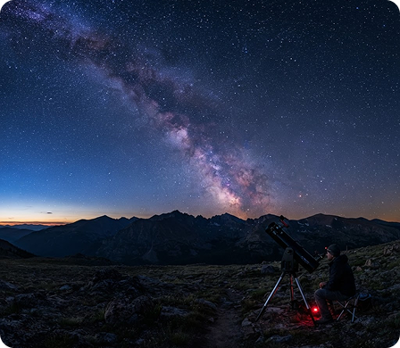

Descubrir / Guía de observación
Tu primera noche bajo las estrellas
Menos pantallas. Más cielo.
No necesitas saberlo todo para empezar. Prepara tu salida, reconoce tus primeras estrellas y deja espacio al asombro.
A simple vista también se descubren grandes cosas.

Cuatro cosas que marcan la diferencia.
01
Elige un buen lugar
Seguro, con poca contaminación lumínica y un horizonte lo más despejado posible.
02
Revisa las condiciones
Consulta nubes, temperatura y fase lunar. Una Luna brillante dificulta ver objetos débiles.
03
Prepara lo esencial
Ropa de abrigo, agua, una linterna roja tenue y un mapa del cielo para tu ubicación.
04
Adapta tus ojos
Espera unos 20–30 minutos en la oscuridad. Evita mirar luces blancas y pantallas brillantes.
El cielo, a tu ritmo.
El mejor primer paso
A simple vista
Constelaciones, meteoros, la Luna y algunos planetas brillantes. Aprende primero a orientarte.
Un paso más cerca
Con prismáticos
Más estrellas y detalles de la Luna. Unos 7×50 o 10×50 pueden ser un buen inicio; apóyalos para ganar estabilidad.
Cuando quieras profundizar
Con telescopio
Cráteres lunares y detalles planetarios. Una montura estable importa tanto como el aumento. Empieza con poco.
Tres objetivos. Cero prisas.
01
Encuentra tu norte o tu sur
Usa puntos cardinales y un mapa del cielo. En el norte, prueba a localizar la Polar.
02
Reconoce una constelación
Elige una figura visible esa noche. Compara sus estrellas con tu mapa.
03
Anota lo que descubriste
Dibuja el patrón, apunta la hora y el lugar. Volver a observar también es aprender.
La visibilidad cambia según la fecha, la hora y tu ubicación. Consulta siempre un mapa actualizado.
04 / Observa con cuidado
Cuida tus ojos. Respeta la noche.
Nunca mires al Sol a través de prismáticos o telescopios sin un filtro solar específico y seguro, colocado delante del objetivo. Las gafas de sol no sirven.
Respeta el entorno y la fauna. Avisa de tu ruta y evita lugares aislados si no conoces la zona. Comparte la oscuridad sin deslumbrar.